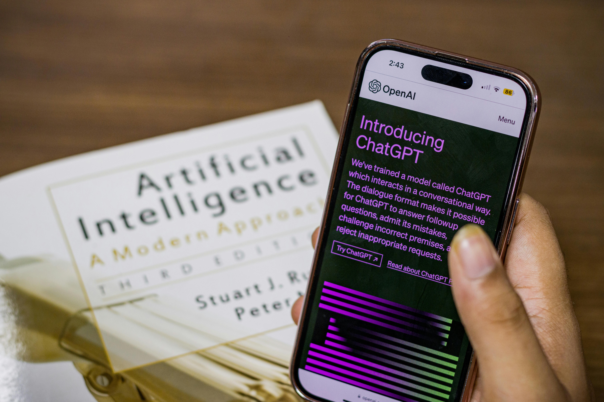

La IA al Sevicio del Desarrolo Web
Chat openAI: el último avance de la inteligencia artificial
Es un lenguaje de inteligencia artificial desarrollado por la empresa OpenAI y basado en la tecnología GPT. Ha sido programado por técnicos que lo han entrenado con todo tipo de información y de herramientas de decodificación para que pueda entender el mensaje de las personas y ofrezca una respuesta. Utilizar el chatbot puede tardar unos segundos, ya que el procesamiento no es tan veloz y también porque depende del tipo de pregunta que se le realice. Cuando más corta, concisa y clara es más rápida la respuesta. Se debe a que es más difícil comprender preguntas extensas y rebuscadas que aquellas más simples. Su desarrollo a partir de la inteligencia artificial ha permitido que cientos de personas hablen de él en la actualidad, sobre todo después del anuncio del lanzamiento de Chat GPT4 y de las nuevas funciones que tendrá. A mediados de marzo de 2023, la empresa OpenAI, fundada por Elon Musk, lanzó al mercado la nueva actualización del chat de inteligencia artificial que responde problemas de forma coherente y rápida.
¿Qué significa GPT?
GPT hace referencia a la tecnología Generative Pre-trained Transformer (GPT). Se trata de la arquitectura informática comúnmente conocida como Transformer y que en la práctica funciona como una red neuronal que ha sido diseñada para procesar secuencias de texto. Dentro del mercado se diferencia del resto gracias a su capacidad de aprendizaje de patrones de dependencia a largo plazo de frases y textos. Gracias a esa tecnología, el chatbot puede generar respuestas rápidas, con sentido y lo más humanas posibles. Todos los sistemas que utilicen la tecnología GPT han sido entrenados con extensas cantidades de texto sin supervisión para que puedan entender fácilmente el lenguaje natural. Puede realizar diferentes tareas como el procesamiento del lenguaje, la elaboración de textos, la traducción automática hasta el análisis de los sentimientos. Esta tecnología ha permitido que el chatbot se pueda unir al gran Google en vez de suplantarlo. Se debe a que muchos usuarios se preguntaban si el asistente virtual no había llegado para desterrar al motor de búsqueda más usado en todo el mundo. Pero los avances y los desarrolladores de las empresas innovadoras generaron todo lo contrario. Chat GPT para Google es una extensión o ampliación del navegador para que los usuarios accedan a una mejora de los motores de búsqueda. La tecnología del chatbot permite una fusión con Google para que las personas accedan a más información de calidad y a más respuestas de utilidad. De esa forma, trabajan de manera conjunta para lograr una mejor experiencia de usuario. No compiten, se complementan. Además, la extensión es de uso gratuito para que todas las personas puedan acceder.
¿Cómo usar ChatGPT?
Si quieres usar ChatGPT puedes comenzar con la versión gratuita ingresando al sitio web ChatGPT.com. El sitio te solicitará tu correo electrónico y tu número de teléfono para enviarte un código de seguridad. Luego, recibirás información donde el chatbot te indica sus alcances, limitaciones y mejoras. Posteriormente, podrás ver una serie de ejemplos y una barra de diálogo al final de la página. En la barra podrás escribir la pregunta que desees y en cuestión de segundos obtendrás una respuesta. Es necesario tener paciencia porque el chat puede tardar unos segundos. No utiliza frases o palabras complejas, ya que trata de ser lo más humano posible para que la persona se olvide que está hablando con un robot. Al principio te encontrarás con una vista previa de investigación gratuita para que puedas dejar comentarios sobre la plataforma. Así, la empresa puede mejorar los sistemas y aportar mayor seguridad, pues si bien el chat es seguro, en ocasiones, puede generar información tendenciosa, engañosa o incorrecta.
Top 5 IAs recomendadas
 Hotpot.ai
Hotpot.ai
Hotpot.ai es una herramienta de inteligencia artificial que te permite crear imágenes realistas a partir de texto, redimensionar fotografías, quitar el fondo y objetos, restaurar imágenes dañadas, colorear fotos en blanco y negro y además cuenta con varias plantillas personalizables que te ayudarán en la creación de contenido.
 Pfpmaker.com
Pfpmaker.com
Las primeras impresiones son muy importantes, es una realidad que no puede negarse y eso en pfpmaker lo saben bien,su interfaz ayuda a los usuarios a mejorar la foto de perfil de sus diferentes redes sociales como Linkedin, te ayuda a quitar el fondo, añadir colores, formas, añadir tu color de marca, etc…
 Brandmark.io
Brandmark.io
Gracias a esta plataforma podrás crear tu logo en minutos: sólo tendrás que poner el logo de tu marca, slogan, palabras clave de tu negocio o marca y escoger una paleta de colores.
 Tome
Tome
Con esta herramienta puedes crear presentaciones y proyectos, en formato storytelling, de forma súper sencilla, lo único que debes hacer es escribir qué tipo de presentación quieres y gracias a Inteligencia Artificial podrás tener diferentes diapositivas con texto e imágenes en minutos.
 Perplexity.ai
Perplexity.ai
Perplexity es un motor de búsqueda que utiliza la tecnología ChatGPT. Con Perplexity, tienes la capacidad de realizar preguntas sobre cualquier tema y elegir la fuente de información que deseas obtener, ya sea de Internet, fuentes académicas, noticias, YouTube, Reddit, etc.